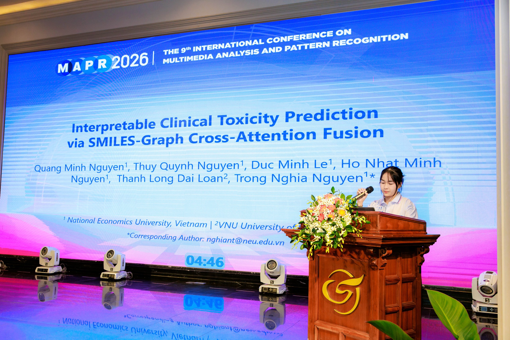
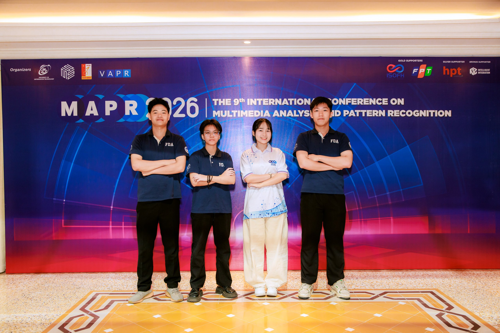
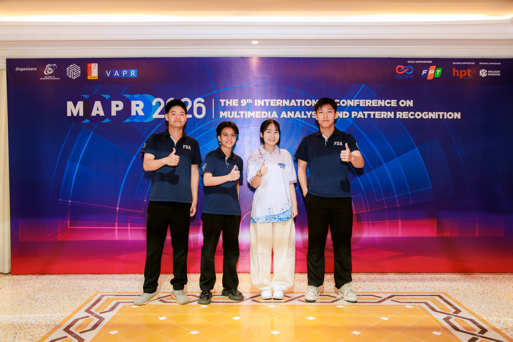

Bio Research Team Presents SMILESGNN at MAPR 2026 International Conference in Hue
Student members of the Bio Research Team presented their work on interpretable drug toxicity prediction at the 9th International Conference on Multimedia Analysis and Pattern Recognition, with the paper now published in IEEE Xplore.

Members of the Bio Research Team (BRT) from the Faculty of Data Science and Artificial Intelligence, National Economics University (NEU), attended and presented a peer-reviewed research paper at the 9th International Conference on Multimedia Analysis and Pattern Recognition — MAPR 2026 — held on August 13–14, 2026 in Hue City, Vietnam.
MAPR is an international forum organized with the support of the Vietnamese Association on Pattern Recognition (VAPR), with the University of Information Technology (UIT, VNU-HCM) among its organizers. This year's edition brought together researchers and practitioners from academia and industry across three tracks: Foundations of AI and Machine Learning; Computer Vision, Multimedia, and Language Processing; and AI Applications and Emerging Domains. The conference is technically sponsored by IEEE, and accepted papers appear in the IEEE Xplore digital library. Keynote lectures were delivered by Professor Nobutaka Ono (Tokyo Metropolitan University, Japan), Professor Ching-Chun Huang (National Yang Ming Chiao Tung University, Taiwan), and Professor Chong-Wah Ngo (Singapore Management University).
Presented on stage by Nguyen Ho Nhat Minh, the Bio Research Team's study sits at the intersection of cheminformatics, graph neural networks, and clinical AI. The work tackles a costly problem in pharmaceutical research: drug candidates that fail clinical trials because of toxicity. Rather than choosing between sequence-based and graph-based views of a molecule, the team built a model that learns, molecule by molecule, which view to trust.
SMILESGNN: Interpretable Clinical Toxicity Prediction via SMILES-Graph Cross-Attention Fusion
This paper presents SMILESGNN, a multimodal deep learning architecture that combines sequence-based and graph-based molecular representations through dynamic attention weighting. SMILESGNN processes molecules via dual pathways: a Transformer encoder captures sequential patterns from SMILES strings, while a Graph Attention Network (GATv2) encoder extracts local structural information from molecular graphs. An attention-based fusion module adaptively learns which representation is more informative for each molecule. Evaluated on the ClinTox dataset with severe class imbalance, SMILESGNN achieves an AUC-ROC of 0.997, F1 score of 0.870, and accuracy of 0.980, significantly outperforming single-modality baselines and correctly identifying three additional toxic compounds missed by the best sequence-only model.
"An attention-based fusion module adaptively learns which representation is more informative for each molecule."
— From the paper abstract

The team is supervised by Dr. Trong-Nghia Nguyen, Faculty of Data Science and Artificial Intelligence, National Economics University, with co-author Thanh-Long Dai Doan of VNU University of Science. The paper is now available in the MAPR 2026 proceedings on IEEE Xplore (pp. 466–471).
Following the lab's participation at COMOSA 2026 just a week earlier, MAPR 2026 marks a second international venue for BRT this August — extending the lab's clinical AI work from physiological signals to molecular toxicity screening, and continuing its commitment to disseminating research through peer-reviewed international conferences. The full research blog for the paper is available on the lab website.